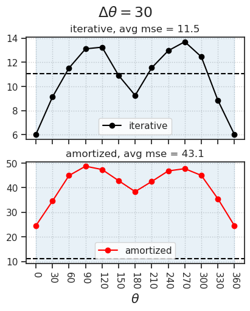
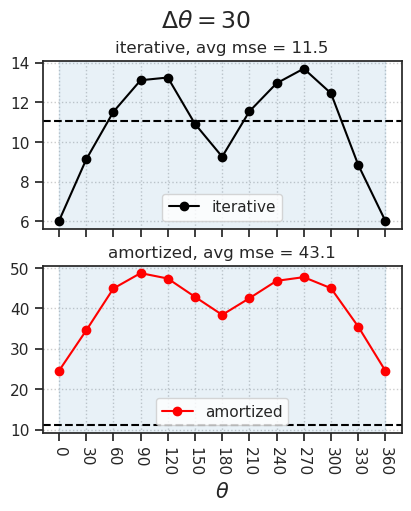
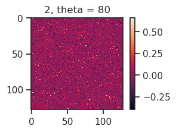

(12) rotation#
Motivation: host = Any, device = cuda:0
Show code cell source
# HIDE CODE
import os, sys
from IPython.display import display
# tmp & extras dir
git_dir = os.path.join(os.environ['HOME'], 'Dropbox/git')
extras_dir = os.path.join(git_dir, 'jb-vae/_extras')
fig_base_dir = os.path.join(git_dir, 'jb-vae/figs')
tmp_dir = os.path.join(git_dir, 'jb-vae/tmp')
# GitHub
# sys.path.insert(0, os.path.join(git_dir, '_PoissonVAE'))
sys.path.insert(0, os.path.join(git_dir, '_IterativeVAE'))
from figures.fighelper import *
from vae.train_vae import *
# warnings, tqdm, & style
warnings.filterwarnings('ignore', category=DeprecationWarning)
warnings.filterwarnings('ignore', category=FutureWarning)
warnings.filterwarnings('ignore', category=UserWarning)
from rich.jupyter import print
%matplotlib inline
set_style()
from base.utils_model import load_quick
from figures.analysis import plot_convergence
from figures.imgs import plot_weights
device_idx = 1
device = f'cuda:{device_idx}'
print(f"device: {device} ——— host: {os.uname().nodename}")
device: cuda:1 ——— host: chewie
from analysis.rotation import *
def _plot(rotation_results, which: str = 'mse_latent'):
if which == 'mse_latent':
num_rounds = kws['num_rounds']
figsize_x = 2.4 * num_rounds
else:
num_rounds = 1
figsize_x = 4
fig, axes = create_figure(2, 1, figsize=(figsize_x, 5), sharex='all')
d2p = rotation_results['iterative'][which]
perf = np.mean(list(d2p.values())[1:])
for ax in axes.flat:
ax.axhline(perf, ls='--', color='k')
pal = {'iterative': 'k', 'amortized': 'r'}
for i, (name, color) in enumerate(pal.items()):
d2p = rotation_results[name][which]
perf = list(d2p.values())
if which == 'mse_latent':
perf = np.mean(perf[1:])
else:
perf = np.mean(perf[1:-1])
axes[i].plot(d2p.keys(), d2p.values(), label=name, marker='o', color=color)
axes[i].set_title(f"{name}, avg mse = {perf:0.1f}")
for ax in axes.flat:
ax.set(xticks=list(d2p.keys()))
ax.tick_params(axis='x', rotation=-90)
for i in range(num_rounds):
ax.axvspan(
i * 360, (i + 1) * 360,
color=f'C{i}', alpha=0.1,
)
fig.suptitle(r"$\Delta \theta = $" + f"{kws['delta_theta']}", fontsize=17)
axes[1].set_xlabel(r"$\theta$", fontsize=15)
add_legend(axes, loc='lower center')
add_grid(axes)
plt.show()
Amortized Gaussian#
shuffle = False
model_name = 'gaussian_MNIST_t-1_z-[128]_<mlp|mlp>'
fit_name = 'amort_u:(5.0)-du:(5.0)_b200-ep500-lr(0.002)_beta(1:0x0.1)_gr(100)_(2024_09_11,22:35)'
tr, meta = load_model(model_name, fit_name, device=device, shuffle=shuffle)
w = tonp(tr.model.layer.dec[-1].weight.data)
w = w.T.reshape(-1, 28, 28)
w.shape
(428, 28, 28)
fig, ax = plot_weights(w, nrows=16, display=False)
fig
fig.savefig(pjoin(fig_base_dir, 'mlp-MNIST-gaussian-amortized.pdf'), bbox_inches='tight')
def do_it(tr, dl_name: str, delta_theta: float = 30, t: int = -1):
dl = getattr(tr, f"dl_{dl_name}")
thetas = range(0, 360 + 1, delta_theta)
x_rot = collections.defaultdict(list)
z_rot = collections.defaultdict(list)
loss_recon = collections.defaultdict(list)
for theta in tqdm(thetas):
for x, *_ in iter(dl):
_x = rotate(
img=x,
angle=theta,
interpolation=InterpolationMode.BILINEAR,
)
output = tr.model.xtract_ftr(_x).stack()
_z, _ = torch.chunk(tr.model.state, 2, 1)
x_rot[theta].append(_x)
z_rot[theta].append(_z)
loss_recon[theta].append(output['loss_recon'])
# fix recon
loss_recon = {
k: torch.cat(v).mean(0)[t].item()
for k, v in loss_recon.items()
}
return x_rot, z_rot, loss_recon
x_rot_vld, z_rot_vld, loss_recon_vld = do_it(tr, 'vld')
x_rot_trn, z_rot_trn, loss_recon_trn = do_it(tr, 'trn')
100%|███████████████████████████████████████████| 13/13 [00:01<00:00, 7.12it/s]
100%|███████████████████████████████████████████| 13/13 [00:10<00:00, 1.28it/s]
fig, axes = create_figure(1, 2, sharey='row')
axes[0].plot(loss_recon_vld.keys(), loss_recon_vld.values(), label='D(E(Ax)) — vld', color='C1', marker='o')
axes[1].plot(loss_recon_trn.keys(), loss_recon_trn.values(), label='D(E(Ax)) — trn', color='C1', marker='o')
add_legend(axes)
plt.show()
rotate latent space#
list(z_rot_trn)
[0, 30, 60, 90, 120, 150, 180, 210, 240, 270, 300, 330, 360]
src = [
torch.cat(z) for theta, z
in z_rot_trn.items()
if theta != 360
]
tgt = src[1:] + [src[0]]
src = tonp(torch.cat(src))
tgt = tonp(torch.cat(tgt))
src.shape, tgt.shape
((720000, 128), (720000, 128))
mat = tgt.T @ src
u, _, vt = np.linalg.svd(mat)
rot_mat = u @ vt
rot_mat.shape
(128, 128)
# plt.plot(np.cumsum(s / sum(s))[:15], marker='o')
def is_rotation_matrix(a, tol=1e-6):
is_orthonormal = np.allclose(a @ a.T, np.eye(a.shape[0]), atol=tol)
determinant_is_one = np.isclose(np.linalg.det(a), 1.0, atol=tol)
return is_orthonormal and determinant_is_one
print(is_rotation_matrix(rot_mat))
True
plt.imshow(rot_mat @ rot_mat.T)
plt.colorbar();
360 / 30
12.0
i = 12
a = np.linalg.matrix_power(rot_mat.T, i)
plt.imshow(a)
<matplotlib.image.AxesImage at 0x78d82d467010>
def rot_latent_mse(tr, rot_mat, dl_name: str = 'vld', delta_theta: float = 15):
dl = getattr(tr, f"dl_{dl_name}")
thetas = range(0, 360 + 1, delta_theta)
loss_recon = collections.defaultdict(list)
for i, theta in tqdm(enumerate(thetas), total=len(thetas)):
# get rotation matrix
a = np.linalg.matrix_power(rot_mat.T, i)
a = tr.to(a)
for x, *_ in iter(dl):
# xtract latents
output = tr.model.xtract_ftr(x).stack()
# rotate latents
z, _ = torch.chunk(tr.model.state, 2, 1)
z_rot = z @ a
# generate pred
y_rot = tr.model.layer.decode(z_rot)
# compute mse
x_rot = rotate(
img=x,
angle=theta,
interpolation=InterpolationMode.BILINEAR,
).flatten(start_dim=1)
mse = tr.model.loss_recon(y_rot, x_rot)
loss_recon[theta].append(mse)
# fix recon
loss_recon = {
k: torch.cat(v).mean(0).item()
for k, v in loss_recon.items()
}
return loss_recon
with torch.no_grad():
loss_rot_recon_vld = rot_latent_mse(tr, rot_mat, 'vld')
loss_rot_recon_trn = rot_latent_mse(tr, rot_mat, 'trn')
100%|███████████████████████████████████████████| 25/25 [00:03<00:00, 6.53it/s]
100%|███████████████████████████████████████████| 25/25 [00:20<00:00, 1.20it/s]
fig, ax = create_figure(1, 1, (6, 4))
ax.plot(loss_rot_recon_vld.keys(), loss_rot_recon_vld.values(), label='D(AE(x))', color='C0', marker='o')
ax.plot(loss_recon_vld.keys(), loss_recon_vld.values(), label='D(E(Ax))', color='C1', marker='o')
add_legend(ax)
add_grid(ax)
plt.show()
x = next(iter(tr.dl_vld))[0]
print('original:')
_ = plot_weights(tonp(x[:20, 0]), nrows=1)
print('_' * 110)
for theta, x_rot in x_rot_vld.items():
print(theta)
_ = plot_weights(tonp(x_rot[0][:20, 0]), nrows=1)
original:
______________________________________________________________________________________________________________
0
30
60
90
120
150
180
210
240
270
300

330
360
Now do Poisson#
models2load = {
'iterative': dict(
model_name='poisson_MNIST_t-32_z-[128]_<jacob|mlp>',
fit_name='u:(8.0)-du:(7.0)_b200-ep500-lr(0.002)_beta(16:0x0.1)_temp(0.05:lin-0.5)_gr(50)_(2024_09_13,10:55)',
device=device,
shuffle=False,
),
'amortized': dict(
model_name='poisson_MNIST_t-1_z-[128]_<mlp|mlp>',
fit_name='b200-ep500-lr(0.002)_beta(1:0x0.1)_temp(0.05:lin-0.5)_gr(50)_(2024_09_13,17:45)',
device=device,
shuffle=False,
)
}
trainers = {
name: load_model(**kwargs)[0] for
name, kwargs in models2load.items()
}
make plot#
for name, tr in trainers.items():
print(name)
w = tr.model.layer.get_weight()
norms = tonp(torch.linalg.vector_norm(w, dim=1))
fig, ax = tr.model.show(order=np.argsort(norms), dpi=500)
fig.savefig(pjoin(fig_base_dir, f'mlp-MNIST-poisson-{name}.pdf'), bbox_inches='tight')
sns.histplot(np.log(norms), label='log norm')
plt.legend()
plt.show()
print('_' * 110)
print('_' * 110)
print('\n\n')
iterative
______________________________________________________________________________________________________________
______________________________________________________________________________________________________________
amortized

______________________________________________________________________________________________________________
______________________________________________________________________________________________________________
delta_theta = 10
kws = dict(tr=trainers['iterative'], delta_theta=delta_theta, t=-1, verbose=True)
dl_rot_trn, mse_pixel_trn = make_rotation_dataloaders(
dl_name='trn', full_data=False, **kws)
100%|█████████████████████████████████████████| 300/300 [10:15<00:00, 2.05s/it]
%%time
kws = dict(num_rounds=4, use_rates=True, t=-1)
rotation_results_all = {}
for delta_theta in [180, 90, 60, 45, 40, 30, 20]:
kws['delta_theta'] = delta_theta
rotation_results = {
name: preform_rotation_analysis(tr, **kws)
for name, tr in trainers.items()
}
rotation_results_all[delta_theta] = rotation_results
_plot(rotation_results, 'mse_latent')
_plot(rotation_results, 'mse_pixel_vld')
 

CPU times: user 20min 48s, sys: 12.2 s, total: 21min
Wall time: 18min 2s
kws = dict(spacing=0.001, num_rounds=1, n_data_batches=1)
results_iter, angles = slow_rotate_batch(trainers['iterative'], reset=False, **kws)
results_amort, angles = slow_rotate_batch(trainers['amortized'], reset=True, **kws)
100%|█████████████████████████████████| 360000/360000 [1:13:42<00:00, 81.40it/s]
100%|█████████████████████████████████| 360000/360000 [1:01:59<00:00, 96.80it/s]
fig, ax = create_figure(1, 1, (5, 4))
ax.plot(angles, tonp(results_iter['mse'].mean(0)), label='iterative', color='k')
ax.plot(angles, tonp(results_amort['mse'].mean(0)), label='amortized', color='r')
add_legend(ax)
add_grid(ax)
plt.show()
fig, axes = create_figure(1, 2)
axes[0].plot(angles, tonp(results_iter['mse'].mean(0)), color='k')
axes[1].plot(angles, tonp(results_amort['mse'].mean(0)), color='r')
plt.show()
dl_rot_vld, recon_pixel_vld = make_rotation_dataloaders(tr, 'vld', delta_theta=delta_theta)
dl_rot_trn, recon_pixel_trn = make_rotation_dataloaders(tr, 'trn', delta_theta=delta_theta)
100%|███████████████████████████████████████████| 50/50 [00:23<00:00, 2.10it/s]
100%|█████████████████████████████████████████| 300/300 [02:03<00:00, 2.43it/s]
print({
k: v.mean(0)[-1].item() for
k, v in recon_pixel_vld.items()
})
{ 0: 6.01228666305542, 40: 10.12661075592041, 80: 12.194077491760254, 120: 13.264482498168945, 160: 9.894977569580078, 200: 10.575679779052734, 240: 12.954391479492188, 280: 13.18549633026123, 320: 10.290305137634277 }
## Was (T, beta) = (10, 5.0)
{ 0: 9.482181549072266, 40: 15.895050048828125, 80: 19.879552841186523, 120: 20.550315856933594, 160: 16.123004913330078, 200: 16.629894256591797, 240: 20.19991111755371, 280: 20.464702606201172, 320: 16.05736541748047, 360: 9.468527793884277 }
print({
theta: [x.shape for x in dl.dataset.tensors]
for theta, dl in dl_rot_trn.items()
})
{ 0: [torch.Size([60000, 1, 28, 28]), torch.Size([60000]), torch.Size([60000, 32, 128])], 40: [torch.Size([60000, 1, 28, 28]), torch.Size([60000]), torch.Size([60000, 32, 128])], 80: [torch.Size([60000, 1, 28, 28]), torch.Size([60000]), torch.Size([60000, 32, 128])], 120: [torch.Size([60000, 1, 28, 28]), torch.Size([60000]), torch.Size([60000, 32, 128])], 160: [torch.Size([60000, 1, 28, 28]), torch.Size([60000]), torch.Size([60000, 32, 128])], 200: [torch.Size([60000, 1, 28, 28]), torch.Size([60000]), torch.Size([60000, 32, 128])], 240: [torch.Size([60000, 1, 28, 28]), torch.Size([60000]), torch.Size([60000, 32, 128])], 280: [torch.Size([60000, 1, 28, 28]), torch.Size([60000]), torch.Size([60000, 32, 128])], 320: [torch.Size([60000, 1, 28, 28]), torch.Size([60000]), torch.Size([60000, 32, 128])] }
num = 20
theta = 0
x2p = tonp(next(iter(dl_rot_vld[theta]))[0].squeeze())
_ = plot_weights(x2p[:num], nrows=1)
theta = 80
x2p = tonp(next(iter(dl_rot_vld[theta]))[0].squeeze())
_ = plot_weights(x2p[:num], nrows=1)
nrows = 2
ncols = int(np.ceil(len(dl_rot_vld) / nrows))
fig, axes = create_figure(nrows, ncols, sharex='all', sharey='all')
for i, (theta, dl) in enumerate(dl_rot_vld.items()):
ax = axes.flat[i]
x2p = next(iter(dl))[0]
x2p = tonp(x2p.ravel())
x2p = x2p[x2p > 0.01]
sns.histplot(x2p, label=r"$\theta = $" + f"{theta}", stat='percent', ax=ax)
axes = trim_axs(axes, len(dl_rot_vld))
add_legend(axes)
plt.show()
for i, (theta, mse) in enumerate(recon_pixel_vld.items()):
plt.loglog(tonp(mse.mean(0)), color=f'C{i}', marker='o')
plt.show()
fig, axes = create_figure(1, 2)
kws = dict(element='step', fill=False)
theta = 0
u2p = tonp(dl_rot_vld[theta].dataset.tensors[-1].ravel())
sns.histplot(u2p, label=r'$\theta = $'+ f'{theta}', ax=axes[0], **kws)
sns.histplot(np.exp(u2p), label=r'$\theta = $'+ f'{theta}', ax=axes[1], **kws)
theta = 80
u2p = tonp(dl_rot_vld[theta].dataset.tensors[-1].ravel())
sns.histplot(u2p, label=r'$\theta = $'+ f'{theta}', ax=axes[0], **kws)
sns.histplot(np.exp(u2p), label=r'$\theta = $'+ f'{theta}', ax=axes[1], **kws)
axes[0].set(yscale='linear', title='log rates')
axes[1].set(yscale='log', title='rates', ylabel='')
add_legend(axes)
plt.show()
rotate latent space#
rot_mat, src_mean, tgt_mean = learn_rotation_matrix(dl_rot_vld, exp=True)
_ = is_rotation_matrix(rot_mat, verbose=True)
rot_mat.shape, np.linalg.det(rot_mat)
is orthonormal : True, determinant = +1 : True
((128, 128), 1.0000002)
# u_true = data[i % ratio][-1]
# u_true = u_true[:, t, :]
# z_true = torch.exp(u_true)
# y_rot_true = tr.model.layer.decode(z_true)
# if i == 2:
# break
# break
plt.imshow(rot_mat @ rot_mat.T)
plt.colorbar();
i = int(360 / delta_theta)
a = torch.linalg.matrix_power(
tr.to(rot_mat).T, i)
plt.imshow(tonp(a))
plt.colorbar()
<matplotlib.colorbar.Colorbar at 0x7f07a52e6390>
dl_rot_vld
{0: <torch.utils.data.dataloader.DataLoader at 0x7f0852a95350>,
40: <torch.utils.data.dataloader.DataLoader at 0x7f0850cb2550>,
80: <torch.utils.data.dataloader.DataLoader at 0x7f08535c9ed0>,
120: <torch.utils.data.dataloader.DataLoader at 0x7f0850ccfc10>,
160: <torch.utils.data.dataloader.DataLoader at 0x7f08523a7c10>,
200: <torch.utils.data.dataloader.DataLoader at 0x7f07b6d87f50>,
240: <torch.utils.data.dataloader.DataLoader at 0x7f07b6d87450>,
280: <torch.utils.data.dataloader.DataLoader at 0x7f07b6dc6e90>,
320: <torch.utils.data.dataloader.DataLoader at 0x7f07b6dc4ed0>}
rot_mat = tr.to(rot_mat)
num_rounds = 2
for i in range(num_rounds * int(360 / delta_theta) + 1):
a = torch.linalg.matrix_power(
rot_mat.T, i)
theta = i * delta_theta
plt.imshow(tonp(a))
plt.title(f"{i}, theta = {theta}")
plt.colorbar()
plt.show()

# dl_other = [
# dl for theta, dl in
# dl_rot_vld.items()
# if theta > 0
# ]
loss_recon_latent
{0: 4.364027976989746,
40: 18.16623306274414,
80: 26.734792709350586,
120: 31.32450294494629,
160: 21.92494010925293,
200: 26.63072395324707,
240: 29.081533432006836,
280: 30.073333740234375,
320: 25.177932739257812,
360: 12.19692325592041,
400: 21.087535858154297,
440: 28.01966094970703,
480: 33.40013122558594,
520: 24.288009643554688,
560: 27.774324417114258,
600: 31.76383399963379,
640: 33.2110481262207,
680: 26.534120559692383,
720: 15.287148475646973}
plt.plot(loss_recon_latent.keys(), loss_recon_latent.values(), marker='o')
[<matplotlib.lines.Line2D at 0x7f07a508cf50>]
loss_recon
{0: 6.008642673492432,
90: 32.10231018066406,
180: 24.296701431274414,
270: 33.443965911865234,
360: 9.749547004699707,
450: 32.74656295776367,
540: 24.87472152709961,
630: 33.88258743286133,
720: 12.92251968383789}
plt.plot(tonp(z_rot[0]))
plt.plot(tonp(z_true[0]))
[<matplotlib.lines.Line2D at 0x7fd017c7fa90>]
u_rot - u_true
tensor([[-0.1907, -1.2829, -0.9184, ..., -0.8574, 0.2194, 1.5112],
[-0.0234, -0.2706, -0.1086, ..., 1.6865, 0.1931, 0.1892],
[-1.3136, -0.3811, -0.3347, ..., -1.6591, 0.5054, -0.8589],
...,
[ 0.7917, 0.2723, 1.4304, ..., -0.9207, 1.0898, -0.4446],
[-1.0291, -0.9635, -0.6696, ..., 0.4814, 0.1860, -0.4889],
[ 0.3646, -1.7867, 0.5609, ..., -0.5407, 0.2036, 0.4175]],
device='cuda:1')
u_rot.shape
torch.Size([200, 128])
u_true.shape
torch.Size([200, 32, 128])
src_mean.shape
torch.Size([1, 128])
tgt_mean.shape
torch.Size([1, 128])
loss_recon
{0: 4.365821838378906,
40: 7.98746919631958,
80: 9.686543464660645,
120: 10.791757583618164,
160: 7.700267791748047,
200: 8.373418807983398,
240: 10.482625961303711,
280: 10.706992149353027,
320: 8.119890213012695,
360: 4.365821838378906,
400: 7.98746919631958,
440: 9.686543464660645,
480: 10.791757583618164,
520: 7.700267791748047,
560: 8.373418807983398,
600: 10.482625961303711,
640: 10.706992149353027,
680: 8.119890213012695,
720: 4.365821838378906}
plt.plot(loss_recon.keys(), loss_recon.values(), marker='o')
plt.grid()
dl0 = dl_rot_vld[0]
for x, _, u in iter(dl0):
# compute mse
theta = i * delta_theta
x_rot = dl_rot_vld[theta].flatten(start_dim=1)
mse = tr.model.loss_recon(y_rot, x_rot)
loss_recon[theta].append(mse)
@torch.no_grad()
def rot_latent_mse(tr, dl_name: str, delta_theta: float, t: int = None):
dl = getattr(tr, f"dl_{dl_name}")
seq = range(t or tr.model.cfg.seq_len)
thetas = range(0, 360 + 1, delta_theta)
loss_recon = collections.defaultdict(list)
for i, theta in tqdm(enumerate(thetas), total=len(thetas)):
# get rotation matrix
a = torch.linalg.matrix_power(
rot_mat.T, i)
for x, *_ in iter(dl):
# xtract latents
output = tr.model.xtract_ftr(x, seq=seq)
output = output.stack()
# rotate latents
z = torch.exp(tr.model.state)
z_rot = (z - src_mean) @ a + tgt_mean
# generate pred
y_rot = tr.model.layer.decode(z_rot)
# compute mse
x_rot = F_vis.rotate(
img=x,
angle=theta,
interpolation=F_vis.InterpolationMode.BILINEAR,
).flatten(start_dim=1)
mse = tr.model.loss_recon(y_rot, x_rot)
loss_recon[theta].append(mse)
# fix recon
loss_recon = {
k: torch.cat(v).mean(0).item()
for k, v in loss_recon.items()
}
return loss_recon
with torch.no_grad():
loss_rot_recon_vld = rot_latent_mse(tr, 'vld', delta_theta=delta_theta, t=30)
# loss_rot_recon_trn = rot_latent_mse(tr, rot_mat, 'trn')
100%|███████████████████████████████████████████| 10/10 [00:38<00:00, 3.83s/it]
fig, ax = create_figure(1, 1, (6, 4))
ax.plot(loss_rot_recon_vld.keys(), loss_rot_recon_vld.values(), label='D(AE(x))', color='C0', marker='o')
ax.plot(loss_recon_vld.keys(), loss_recon_vld.values(), label='D(E(Ax))', color='C1', marker='o')
add_legend(ax)
add_grid(ax)
plt.show()
## Was: delta_theta = 40, T = 30
## Was: spacing = 30
## Was: amortized Gaussian
x = next(iter(tr.dl_vld))[0]
print('original:')
_ = plot_weights(tonp(x[:20, 0]), nrows=1)
print('_' * 110)
for theta, x_rot in x_rot_vld.items():
print(theta)
_ = plot_weights(tonp(x_rot[0][:20, 0]), nrows=1)
original:
______________________________________________________________________________________________________________
0
30
60
90
120
150
180
210
240
270
300
330
360
x = next(iter(tr.dl_vld))[0]
output = tr.model.xtract_ftr(x, seq=range(100))
output = output.stack()
print(tr.model.layer.n_updates)
100
plt.loglog(tonp(output['loss_recon'].mean(0)));